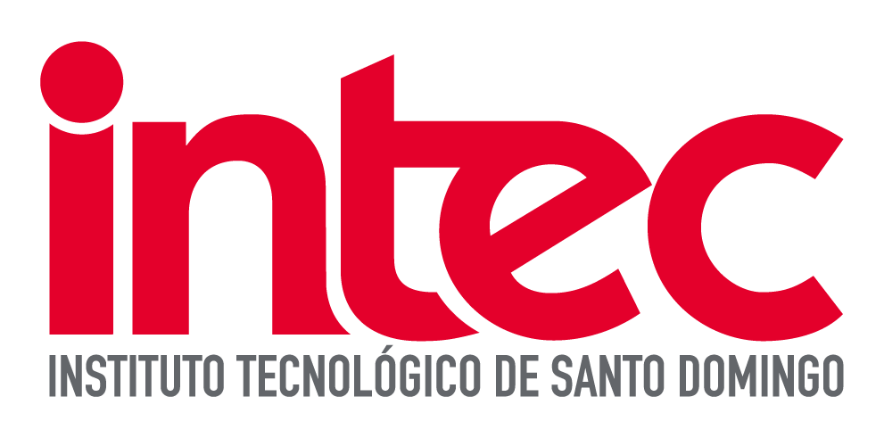

Instituto Tecnológico de Santo Domingo
Área de Ingenierías
Equipo IDS335-01_01
- Ashley Johanna Franco Bobonagua – 1127646
- Gabriela Duverge – 1128655
- Eddy Cabreja – 1129672
- Jesús Rodriguez – 1128094
- Jarry Gonzalez – 1127998
- Jorge Melo – 1127398
- Diana Ferreras – 1128286
Tabla de Contenido
1. Brief del Producto Digital
Revisión Técnica Vehicular en República Dominicana: Concepto, Desafíos y Transformación Digital
La Revisión Técnica Vehicular (RTV) es un procedimiento periódico de inspección mediante el cual el Estado verifica que los vehículos automotores en circulación cumplan con las condiciones mínimas de seguridad mecánica y ambiental establecidas por la ley. En el caso dominicano, este proceso encuentra su fundamento legal en la Ley No. 63-17 de Movilidad, Transporte Terrestre, Tránsito y Seguridad Vial, a través de la cual se ordena la creación de un Programa Nacional de Inspección Técnica Vehicular de carácter privado y centralizado, que comprende la construcción y operación de 56 centros de inspección distribuidos geográficamente en todo el territorio nacional (Dirección General de Alianzas Público-Privadas [DGAPP], 2022).
Las características esenciales de la RTV son su periodicidad obligatoria, su carácter técnico-mecánico y medioambiental, y su universalidad, pues aplica a toda unidad vehicular que circule por las vías públicas. Durante la inspección se evalúan sistemas críticos como frenos, dirección, suspensión, luces y emisión de gases contaminantes (Docu360, 2024). La importancia de implementar un sistema de RTV robusto es multidimensional: reduce significativamente el riesgo de accidentes de tránsito al garantizar que los vehículos están en condiciones óptimas; contribuye a la reducción de emisiones contaminantes en línea con el Objetivo de Desarrollo Sostenible 13 (Acción por el Clima); y fortalece la seguridad vial como bien público. En la actualidad, el marbete dominicano se renueva sin que medie una revisión técnica formal, lo que representa una brecha estructural que el sistema aspira a corregir (DGAPP, 2022).
Los desafíos que enfrenta la República Dominicana para implementar la RTV son de naturaleza institucional, social y operativa. La magnitud del problema queda evidenciada en las cifras: según el Observatorio Permanente de Seguridad Vial (Opsevi) del Instituto Nacional de Tránsito y Transporte Terrestre (Intrant), en 2024 fallecieron 2,971 personas en accidentes de tránsito, para una tasa de mortalidad de 27.0 por cada 100,000 habitantes, cifra que supera en un 96 % a las muertes registradas por COVID-19 en 2020 (Acento, 2026). A pesar de contar con legislación vigente desde 2017 y de haber sido declarada de interés público mediante la Resolución 01-2022, la RTV aún no se ha implementado como sistema nacional; en la práctica, únicamente se realizan controles visuales en operativos puntuales (Diario Libre, 2025).
La tecnología emerge como el eje transformador para convertir la RTV en una realidad operativa y sostenible en República Dominicana. Una plataforma digital de inspección técnica vehicular permitiría automatizar el agendamiento de citas, registrar el historial técnico de cada vehículo, emitir certificados digitales interoperables con el sistema de marbete, y generar alertas automáticas de vencimiento a propietarios, reduciendo así la carga operativa de las instituciones involucradas. El gobierno dominicano ya ha dado pasos concretos en esta dirección: el Intrant lanzó en junio de 2025 la iniciativa Intrant Digital. Paralelamente, la integración con plataformas como Waze for Cities permite al Intrant desplegar drones en intersecciones críticas y tomar decisiones en tiempo real a partir del flujo vehicular, un claro ejemplo del Objetivo de Desarrollo Sostenible 17 (Alianzas para lograr los objetivos) (Ministerio de la Presidencia, 2023). Un sistema de software bien diseñado tiene el potencial de transformar la seguridad vial dominicana, consolidando la RTV como un pilar del desarrollo sostenible nacional.
2. Definición de Procesos de Software y Objetivos de Usuario
2.1 Actores del Sistema
- Propietario / Conductor: Ciudadano que posee un vehículo de motor registrado en RD.
- Inspector Técnico: Técnico certificado que ejecuta la revisión en el centro RTV.
- Administrador del Centro RTV: Gestiona citas, personal e informes del centro.
- INTRANT / Entidad Reguladora: Recibe reportes, monitorea cumplimiento y emite normativas.
- Sistema Externo – DGII / Marbete: Recibe la certificación para vincularla al marbete anual.
2.2 Objetivos de Usuario por Actor
- Registrarse en el sistema y vincular su vehículo mediante la placa.
- Agendar y gestionar citas de inspección en el centro RTV más cercano.
- Consultar el historial técnico completo de su vehículo.
- Recibir notificaciones de vencimiento del certificado y alertas.
- Realizar el pago en línea de la tarifa de inspección.
- Iniciar sesión y visualizar la agenda de inspecciones asignada.
- Registrar los resultados de cada punto de inspección.
- Emitir el veredicto de APROBADO / RECHAZADO con observaciones detalladas.
3. Procesos de Software del Sistema RTV-DO
El sistema se articula en torno a seis procesos de software principales:
- Proceso 01: Registro y Autenticación de Usuarios - Garantizar que cada actor acceda al sistema con credenciales verificadas y vincular vehículos.
- Proceso 02: Agendamiento de Cita de Inspección - Permitir al propietario seleccionar un centro RTV, fecha, horario y pagar en línea.
- Proceso 03: Ejecución de la Inspección Técnica - Digitalizar la revisión física, registrando hallazgos y emitiendo el veredicto final.
- Proceso 04: Emisión del Certificado de Inspección - Generar y entregar el certificado digital de inspección aprobada, listo para DGII.
- Proceso 05: Gestión de Reinspección por Rechazo - Guiar al propietario rechazado para corregir deficiencias y agendar reinspección.
- Proceso 06: Monitoreo y Reportes Regulatorios - Proveer al INTRANT dashboards estadísticos y exportación de datos.
4. Diagramas de Flujo de Procesos de Software


Representación Textual de Flujos Principales
- Proceso 01 (Autenticación): INICIO → Usuario accede portal → Ingresa datos → Valida INTRANT → Envía OTP → Activa cuenta → FIN
- Proceso 02 (Agendamiento): INICIO → Inicia sesión → Elige centro/horario → Paga en línea → Genera QR → FIN
- Proceso 03 (Inspección): INICIO → Escanea QR → Revisa por módulos → Registra veredicto (Aprobado/Rechazado) → FIN
5. Mapa Estructural del Sistema RTV-DO

| Módulo | Proceso | Actores | Salida / Resultado |
|---|---|---|---|
| 01 Autenticación | P01 – Registro y autenticación | Propietario, Inspector, Admin | Cuenta verificada; vehículo vinculado |
| 02 Agenda | P02 – Agendamiento de cita | Propietario | Cita confirmada con QR y pago |
| 03 Inspección | P03 – Ejecución técnica | Inspector, Admin de Centro | Registro inmutable de inspección |
| 04 Certificación | P04 – Emisión de certificado | Sistema, Inspector, Propietario | Certificado firmado para INTRANT/DGII |
| 05 Reinspección | P05 – Gestión por rechazo | Propietario, Inspector | Nueva cita; expediente regulatorio |
| 06 Reportes | P06 – Monitoreo regulatorio | INTRANT, Admin de Centro | Dashboard; exportación Opsevi |